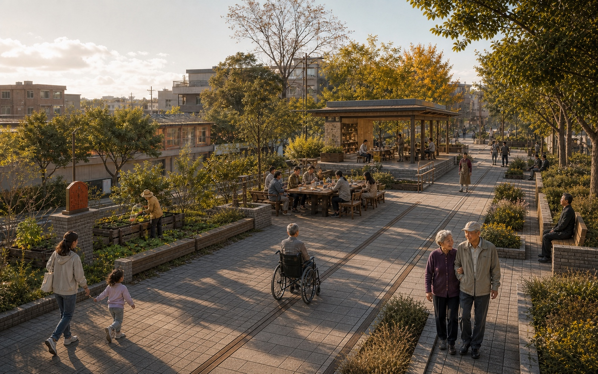
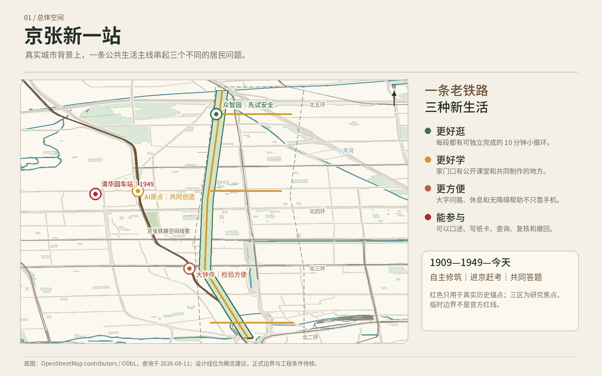
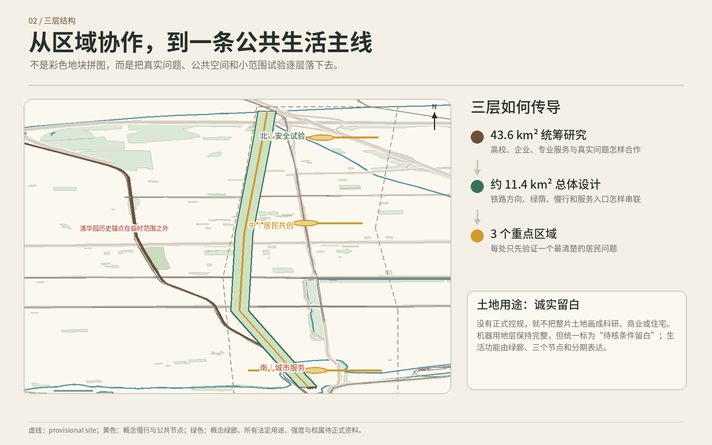
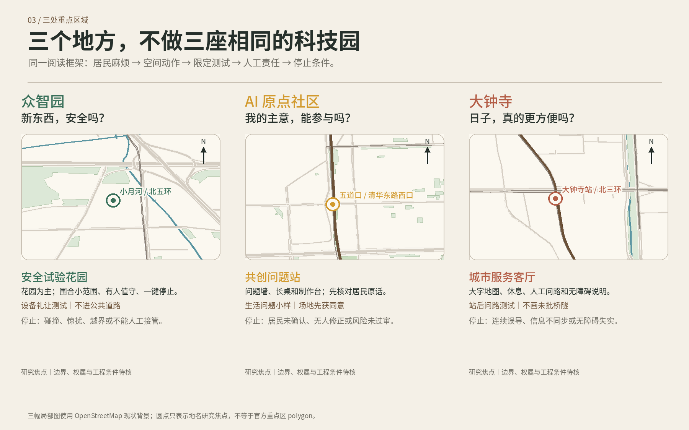
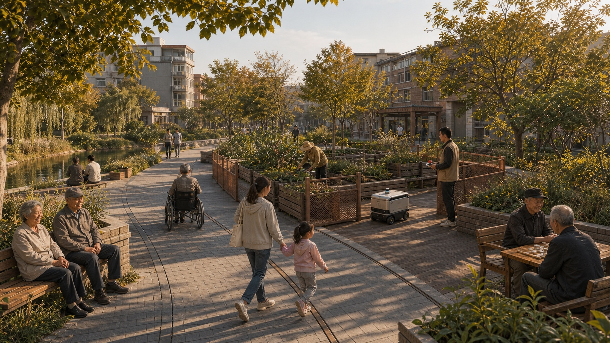
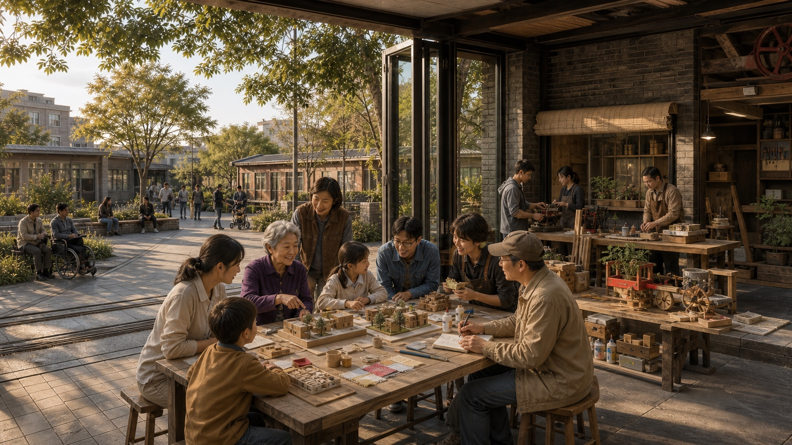
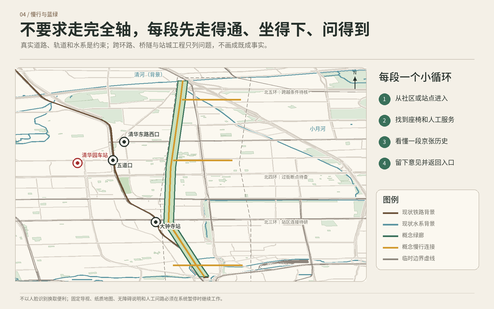
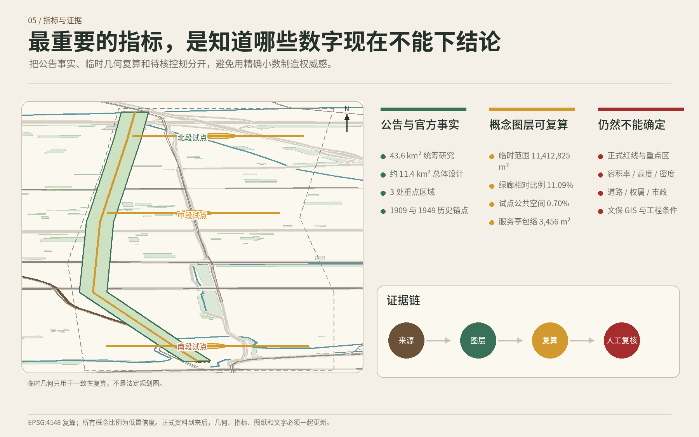

京张新一站：一条老铁路，三种新生活
让百年京张进入普通人的日常：北段先试安全，中段共同创造，南段检验生活是否更方便。
京张新一站
> **一条老铁路，三种新生活。让家门口更好逛、更好学、更方便，也让生活在这里的人能够参与改变它。**
居民先看到的答案
这不是一个要求居民先学会 AI 的科技园方案。它首先解决四件小事：散步时少遇到断路和难走的台阶，孩子在家门口也能学习和制作，换乘和问路不必只靠手机，提出的生活问题能查到谁在处理。AI 只在背后帮助整理、翻译和寻找相似问题；现场人员必须核对，居民可以不用、可以退出、可以要求人工复核。
空间记忆只有一句：北段众智园是“先试一试的花园”，中段 AI 原点社区是“大家一起做的街区”，南段大钟寺是“生活体验客厅”。三个地方不做同一种科技展厅，而是依次回答“安全吗、能参与吗、真的方便吗”。


设计依据与资料清单
方案以公开征集公告和面向智能体的任务书为任务依据，把 43.6 平方公里统筹研究、约 11.4 平方公里总体设计和三处重点区域分开回答。公告给出任务和约面积，但仓库目前只有用于接入和自检的临时粗略边界。因此图中的临时范围只能帮助讨论，不能被当作官方红线、权属、控规或精确面积。 [source:OFFICIAL-ANNOUNCEMENT] [source:AGENT-TASKBOOK] [source:SITE-PACKAGE]
资料分三层使用：北京市官方页面支持京张铁路、清华园车站和遗址公园的历史与公共背景；OpenStreetMap 只帮助普通人辨认铁路、道路、水系、公园和站点；用地、建筑、慢行、服务点和分期则是本方案的概念建议。正式边界、道路红线、文保 GIS、权属、现状建筑、市政管线和批准指标仍待补齐。任何不能证实的内容都不写成“已建、已批或将实施”。 [source:SOURCE-REGISTRY] [source:PROCESSED-FACT-PACK] [source:BOUNDARY-SOURCE] [source:KEY-AREA-SOURCE]
为了让设计既可读又可追溯，正文先讲居民体验，图面表达真实相对关系，最后才用数据文件说明“依据是什么、哪里仍不确定”。这符合征集任务和城市设计成果深度的基本要求，但不把参赛方案冒充法定规划。 [standard:PROJECT-OFFICIAL-ANNOUNCEMENT] [standard:PROJECT-AGENT-OPEN-CALL-TASKBOOK] [depth:existing_conditions_diagnosis]
三层范围工作框架
统筹研究范围回答“创新怎样服务城市”：高校、企业、专业服务和真实生活问题如何形成长期合作。总体设计范围回答“公共生活怎样串起来”：以京张铁路遗址公园的南北线索组织慢行、绿荫、历史和日常服务。三处重点区域回答“每个地方具体先做什么”：众智园先试安全，原点社区共同制作，大钟寺检验服务是否有用。
三层之间不是三套互不相干的图。上层确定“问题从哪里来、谁帮助试验”；中层把它放到一条可辨认的公共生活主线上；重点区用小范围、可撤除、有人负责的项目验证。通过验证的项目才能讨论扩大，无法说明安全、隐私、场地和维护责任的项目就停止。 [depth:three_level_scope_framework] [depth:overall_spatial_structure]
总体和重点区边界仍为临时几何，尤其仓库中的“大钟寺重点区”与公开地图上可辨认的大钟寺站存在明显位置差异。正式图面因此把站点作为居民认知参照，把三处 polygon 标成“边界待核”，不靠错误边界制造精确感。 [data:geometry/site_boundary.geojson#SITE-001] [data:geometry/key_areas.geojson#PROV-KEY-001]

统筹研究范围产业与未来城市研究
创新带不能只靠办公楼和企业名字成立。真正的创新生态至少要让五件事连接起来：真实问题能被提出，小团队有地方做小样，安全与专业人员能复核，企业和公共机构愿意承担后续责任，普通人能够评价结果。方案把这条路径概括为“问题—小试—复核—使用—公开答卷”，而不是许诺尚未确定的企业、投资、产值和活动。
“两翼”只表达支持关系：中关村科技服务翼提供人才、导师、法务、测评、合作和成果转化帮助；小月河场景赋能翼提供来自社区、公园和日常出行的真实问题。两翼不是新的固定边界，也不代表学校、企业或河道空间已经同意开放。它们服务“一轴三区”，不抢居民第一眼的主画面。
六个案例各借一件事：剑桥 Kendall Square 提醒创新区要成为可步行、可生活的创新社区；多伦多 MaRS 说明团队需要资本、客户、人才和研究等共同支持；巴黎 Station F 把共享服务、创造空间和日常生活分层；巴塞罗那 22@ 把公众科学活动纳入创新体系；新加坡 LaunchPad 强调可调整空间和共同服务；首尔 DMC/XR 支持链把开发、测试、评价、转化和公众体验连起来。本方案不复制这些地方的规模、地价、建筑、企业名单和政策，只借可在海淀小范围验证的机制。 [source:CASE-KENDALL-CAMBRIDGE] [source:CASE-MARS-TORONTO] [source:CASE-STATION-F-PARIS] [source:CASE-22AT-BARCELONA] [source:CASE-LAUNCHPAD-SINGAPORE] [source:CASE-DMC-SEOUL]
这套研究最终落到公共空间、服务入口和三项限定测试，而不是停留在产业词汇中。测试通过居民、无障碍、安全、隐私和运维复核后，才供专业团队继续深化。 [standard:MOHURD-URBAN-DESIGN-MEASURES] [depth:renewal_project_list]
总体设计范围城市更新与控规深度城市设计
总体结构是“一条公共生活主线、三个生活节点、两类支持关系”。主线沿公开地图中的京张铁路方向组织，但在临时场地边界之外的部分只作背景参照；正式提交的设计线位向临时边界内收拢，并明确不是既有铁路、道路中心线或施工放线。三个节点分别位于公告要求的三处重点区临时范围内，每个节点都设置休息、人工服务、纸质意见和可撤除试用组件。
没有正式控规时，方案不把 11.4 平方公里涂成大块科研、商业和居住用地。机器用地层完整覆盖临时范围，但统一标为“待核条件留白区”；真正的功能意图由公共空间、绿廊、服务亭和分期表达。这样保留了专业深化入口，也避免用彩色地块暗示已经确定法定用途。 [data:geometry/land_use.geojson#LU-001] [depth:land_use_layout]
建筑只提出三处小尺度、可撤除服务亭的占地包络：北段供测试值守与一键停止，中段供居民核对问题和共同制作，南段供问路、休息和服务展示。它们不是建筑设计或建设规模。容积率、建筑高度、建筑密度、拆改留、停车、市政容量和道路红线都等待正式资料；取得资料后要由规划、建筑、交通、市政、文保和无障碍专业团队重新设计。 [data:geometry/buildings.geojson#BLDG-001] [depth:development_intensity_controls]
重点区域详细设计
众智园｜先试一试的花园
北段先回答“新东西，安全吗？”花园仍是主体，试验只占清楚围合、有人值守的小范围。可移动座椅、遮荫、围栏、停止按钮和意见卡架组成“安全试验花园”；服务机器人或新设备只能在限定区域学习减速、停车和礼让，不进入公共道路。发生碰撞、惊扰、越界、无法人工接管或居民集中反对时立即停止。清河、小月河和北五环只作真实背景，河道蓝线、防洪、交通和治理条件仍待核。 [data:geometry/key_areas.geojson#PROV-KEY-001] [data:geometry/public_space.geojson#PUBLIC-001]
AI 原点社区｜大家一起做的街区
中段先回答“我的主意，能参与吗？”“共创问题站”用长桌、问题墙、纸板制作台、字幕和人工服务窗，让居民说出麻烦，学生与团队做低成本小样，居民再核对是否解决原问题。AI 只整理相似问题和生成讨论草稿。任何校园、院落、首层或产权空间必须取得同意后使用；问题未经居民确认、团队不承担修改责任或专业风险未解决，就不能开始试用。五道口与清华东路西口只作为居民熟悉的站点参照。 [data:geometry/key_areas.geojson#PROV-KEY-002] [data:geometry/public_space.geojson#PUBLIC-002]
大钟寺｜生活体验客厅
南段先回答“日子，真的更方便了吗？”“城市服务客厅”优先提供大字地图、休息座、人工问路、无障碍说明和经过前两段验证的成熟服务。AI 可以把已核对路线转换为语音和多语言回答，但不做人脸识别、不保存完整行程。公开地图上的大钟寺站与仓库临时重点区并不重合，因此本方案不画未批准的桥梁、隧道和四象限连通工程，只把站区连接列为正式交通深化议题。 [data:geometry/key_areas.geojson#PROV-KEY-003] [data:geometry/public_space.geojson#PUBLIC-003]
三处节点使用同一检查表：谁受益、空间在哪里、AI 只做什么、谁人工负责、收不收数据、没有 AI 能否使用、什么时候停止。由此保证三个片区性格不同，却遵守同一公共利益底线。 [depth:three_key_area_detailed_design]




AI 创新生态、人才画像与 AI+ 场景
六类使用者包括邻里老人、带孩子家庭、学生与青年创作者、通勤者与园区员工、沿线小商户与社区服务人员，以及需要无障碍或语言帮助的人。每一类都可能被“只扫二维码、只认智能手机、默认采集影像”的服务排除，所以所有场景必须有大字、纸卡、人工、语音或面对面替代方式。企业和开发者是解决问题的参与者，不是这套公共空间唯一的主人。
十个场景都从日常麻烦开始：轻松路线、设备礼让、问题登记、技术防骗课、多语言议事、生活问题小样、公益项目找帮手、站后问路、无障碍活动帮助、京张与进京赶考讲解。其中“设备先学会礼让”“生活问题做成小样”“到站后少绕路”是三项产业测试，只允许限定地点、小规模、自愿参与和专业复核，不代表已经批准运营、开放校园或实施交通工程。
场景运行只有一条公开流程：**居民原话 → 现场人员核对 → AI 整理/翻译/查重 → 团队提出小办法 → 限定地点试用 → 居民与专业人员评价 → 有权主体决定继续、修改或停止。** AI 不审批、不处罚、不决定资助，不用个人画像代替公众讨论；居民拒绝提供非必要数据时，仍可使用基本公共服务。 [source:AGENT-TASKBOOK] [depth:municipal_new_infrastructure]
三个地标——安全试验花园、共创问题站、城市服务客厅——都先是可以坐、可以问、可以不用手机的公共空间。沿线“百年共创刻度”只记录确实改善生活的问题、办法和复核结果，不做企业广告或名人榜；临时展签到期可撤，永久保留需公开评选、文保审查和正式审批。
用地、建筑规模与拆改留方案
本次最重要的用地判断是“不伪造控规”。临时场地范围被完整登记为允许分类中的“留白用地”，意思不是未来全部留空，而是公开资料不足以判断法定用途。科研、商业、社区服务和绿地等功能，只作为三个生活节点和公共生活主线的设计意图，不写成已经确定的比例和地块。取得正式用地、道路、权属和控规后，专业团队必须重新划分并复算。 [standard:MNR-LAND-USE-CLASSIFICATION-GUIDE] [data:geometry/land_use.geojson#LU-001]
三处服务亭每处约 1,152 平方米概念包络，合计 3,456 平方米；这个数只用于检验临时图层，不是建设规模。亭体优先考虑租用、装配、可移动和可回收，先证明人工服务与试用确有需要，再决定是否需要固定建筑。未经文保、消防、市政、无障碍、权属和规划审查，不提出层数、高度、立面和施工承诺。 [metric:building_footprint_area_sqm] [standard:MOHURD-ARCH-DESIGN-DEPTH-2016]
现状建筑资料缺失，因此不制作虚假的“拆、改、留”地图。正式深化按四步进行：核实现状和权属；判断历史、结构与使用价值；与居民和使用者确认需求；再由专业团队提出保留、修缮、改造或更新建议。建筑风貌以克制、耐用、易维护为先，不用发光屏和夸张科技造型代替空间品质。 [depth:height_massing_character] [depth:retain_renovate_demolish]
交通、轨道、市政与公共服务设施
公开地图帮助识别京张铁路、北二至北五环、五道口、清华东路西口、大钟寺、小月河和清河的真实相对关系。方案主线参考现状铁路方向，在临时边界内形成南北慢行建议；三条东西连接分别服务三个生活节点。所有线位均为低置信度概念建议，不代表道路中心线、轨道工程、桥隧、红线或已经贯通。 [source:OSM-CONTEXT-20260811] [data:geometry/roads.geojson#ROAD-001]
居民不必一次走完全轴。每段先形成可以独立完成的 10 分钟小循环：从社区或站点进入，找到座椅和服务，了解一段历史，留下意见，再回到原入口。正式深化优先调查无障碍断点、过街安全、骑行停放、公交地铁接驳和施工期间绕行；涉及环路、铁路和站区的工程，必须由交通与产权主体核定。 [depth:traffic_rail_slow_parking]
市政方面不编造管线、能源、排水、防洪、消防、算力和通信容量。服务亭只预留“可以离线工作、可以人工接管、低能耗、易维护”的原则。清河和小月河没有正式蓝线时不做岸线工程结论；所有用电、设备、雨洪和网络设施均须在取得正式资料后专项复核。 [data:geometry/constraints.geojson#OFFICIAL-CONSTRAINTS-PENDING] [depth:risk_missing_data]

蓝绿空间、公共空间与城市风貌
京张铁路遗址公园已经证明铁路遗存可以同时服务文化教育、绿色休闲和社区生活。本方案把这条方向继续向北、向南理解为“公共生活主线”，在临时范围内提出向主线两侧各约 68 米的概念绿廊，用来计算和比较，不作为控规绿地。优先动作不是造景，而是补绿荫、座椅、清楚入口、无障碍说明和慢行断点。 [source:JINGZHANG-PARK-PHASE1] [data:geometry/green_space.geojson#GREEN-001]
三处公共空间合计只是临时范围中的小比例，刻意从小处开始。北段自然、松弛、低干扰；中段开放、可讨论、能制作；南段清楚、便利、便于问路和休息。组件可以换、可以撤，公共空间在没有任何数字服务时仍然成立。正式绿地、河道、道路和建筑条件取得后，要重新校正范围与断点。 [depth:blue_green_public_space]
品牌名为“京张新一站”，英文工作名 **NEXT STOP: JINGZHANG**。导视用铁路褐、克制记忆红、公园绿和生活金，同时配文字与图形。1909 表达京张铁路自主修筑，1949 只用于清华园车站“进京赶考”真实历史锚点，今天表达共同回答新的城市问题。清华园车站旧址与三个当代节点不能互相替代，也不能把整条创新带冒充 1949 年真实行进路线。 [source:JINGZHANG-1909-HISTORY] [source:QINGHUAYUAN-RED-HISTORY] [source:QINGHUAYUAN-HERITAGE-CONTROL]
更新项目清单、实施政策与分期计划
第一步只做三处日常服务试点：可坐的公共空间、人工服务、纸卡入口和各区一个最可退出的测试。启动条件是责任人、告知、人工接管和停止办法都写清。第二步根据真实使用修补绿荫、慢行与东西连接断点，不因一张概念图直接建设。第三步等待正式边界、控规、文保、交通、市政、权属和资金条件，再由专业团队深化长期设施。 [data:geometry/phasing.geojson#PHASE-001] [depth:phasing_implementation]
建议项目清单包括：三处生活问题服务点、京张百年导视、每段 10 分钟小循环、三处可撤除服务亭、三项限定产业测试、月度居民开放日、季度继续/修改/暂停/停止复核，以及年度“城市答卷”。这些都是参考方案，不代表政府活动、财政安排、场地许可或固定运营单位已经确定。
长期运行采用“月、季、年”：每月公开问题和处理状态；每季度检查安全、投诉、隐私、无障碍、真实使用和维护责任；每年用普通话讲清解决了什么、哪里失败、下一年改什么。居民可以口述、写纸卡或使用后续正式确定的线上入口，不强制下载 App。建议 7 日内确认收到、30 日内说明状态，但真实责任单位、时限和投诉渠道必须正式确认后才能承诺。
每个项目都设置退出线：发生危险、严重泄露或不能人工接管时立即停止；信息连续错误、投诉无人负责或数据去向不清时暂停补证；试用期结束仍无人使用、无人维护或没有合法场地时到期退出。停止经验也进入年度答卷。 [data:geometry/phasing.geojson#PHASE-002] [data:geometry/phasing.geojson#PHASE-003]
指标体系、面积复算与合规矩阵
临时场地面积复算为 11,412,825.386 平方米，接近公告约 11.4 平方公里，但它来自 provisional polygon，不是官方精确面积。概念绿廊相对比例为 0.110896，三处试点公共空间相对比例为 0.006978，可撤除服务亭概念包络合计 3,456 平方米，重点区数量为 3。所有数值使用 EPSG:4548 从提交图层复算，并明确低置信度。 [metric:site_area_sqm] [metric:green_ratio] [metric:public_space_ratio] [metric:key_area_count]
这些比例只回答“当前概念图层彼此是否一致”，不等于法定绿地率、公共空间指标或建设量。容积率、建筑高度、建筑密度、退线、道路红线、停车、市政容量和重点区精确面积继续标为 unknown。正式资料到来时，必须同时更新几何、指标、图纸和文字，不能只换一个数字。 [depth:metrics_recalculation]
合规矩阵逐项对应公告 1.3、1.4、1.5 和 agent.1—agent.6；标准矩阵说明引用依据，设计深度矩阵说明当前完成到什么程度。自动检查只能证明文件齐、图层闭合、引用可回溯，不代表设计自然入选。最后仍需普通居民、城市设计评委、事实审查和隐私公共利益四个视角共同复核。 [standard:MOHURD-CONTROL-DETAILED-PLANNING]

风险、版权与合规说明
最大的空间风险是临时边界与真实地名关系存在偏差；最大的实施风险是没有权属、控规、道路、市政、消防和责任主体；最大的公共风险是把试用当批准、把居民意见自动分类当治理决定；最大的文化风险是把清华园真实红色历史娱乐化，或把当代三节点说成历史路线。图面和文字均对这些风险做显著提示。
OpenStreetMap 只作居民认知背景，遵守 ODbL 署名要求；北京市官方页面只用于事实核验；国际案例只作机制比较。方案自制文字、图形、图纸和网页不得嵌入远程字体、脚本、地图瓦片、表单和跟踪代码。企业标志、人物肖像、受版权保护图片和未经授权代码不进入作品；详细声明见版权文件。
居民数据坚持“非必要不收集”：不把人脸识别作为进入公共空间、问路、反馈和参加活动的条件；儿童、健康、行动障碍和家庭困难信息非必要不收；居民可以看原话、要求人工复核、退出试用和申请更正或撤回非必要资料。具体保存期限和删除规则必须由正式运营制度确认。
本方案是城市设计概念建议和供专业团队深化的参考方案；目前未经法定审批，也没有确定投资、取得土地、完成文保或工程审查，不保证实施。 [data:geometry/key_areas.geojson#PROV-KEY-002] [data:geometry/key_areas.geojson#PROV-KEY-003]
参考资料
人类可读来源
- 征集公告、面向智能体任务书、场地资料包和来源登记表。
- 北京市文物局关于京张铁路 1909 年历史和清华园车站文保控制的公开资料。
- 北京市政府与文化旅游部门关于 1949 年清华园车站和“进京赶考之路”的公开资料。
- 北京市园林绿化部门关于京张铁路遗址公园一期的公开资料。
- OpenStreetMap 2026-08-11 查询结果，仅作现状背景。
- 剑桥、MaRS、Station F、巴塞罗那、JTC 与首尔市的机构一手案例页面。
机器可读证据索引
来源：[source:SITE-PACKAGE] [source:SOURCE-REGISTRY] [source:PROCESSED-FACT-PACK] [source:BOUNDARY-SOURCE] [source:KEY-AREA-SOURCE] [source:OFFICIAL-ANNOUNCEMENT] [source:AGENT-TASKBOOK] [source:OSM-CONTEXT-20260811] [source:QINGHUAYUAN-RED-HISTORY] [source:QINGHUAYUAN-HERITAGE-CONTROL] [source:JINGZHANG-PARK-PHASE1] [source:JINGZHANG-1909-HISTORY] [source:CASE-KENDALL-CAMBRIDGE] [source:CASE-MARS-TORONTO] [source:CASE-STATION-F-PARIS] [source:CASE-22AT-BARCELONA] [source:CASE-LAUNCHPAD-SINGAPORE] [source:CASE-DMC-SEOUL]
标准：[standard:PROJECT-OFFICIAL-ANNOUNCEMENT] [standard:PROJECT-AGENT-OPEN-CALL-TASKBOOK] [standard:MOHURD-URBAN-DESIGN-MEASURES] [standard:MOHURD-CONTROL-DETAILED-PLANNING] [standard:MNR-LAND-USE-CLASSIFICATION-GUIDE] [standard:MOHURD-ARCH-DESIGN-DEPTH-2016]
设计深度：[depth:existing_conditions_diagnosis] [depth:three_level_scope_framework] [depth:overall_spatial_structure] [depth:land_use_layout] [depth:development_intensity_controls] [depth:height_massing_character] [depth:retain_renovate_demolish] [depth:traffic_rail_slow_parking] [depth:municipal_new_infrastructure] [depth:blue_green_public_space] [depth:three_key_area_detailed_design] [depth:renewal_project_list] [depth:phasing_implementation] [depth:metrics_recalculation] [depth:risk_missing_data]
空间：[data:geometry/site_boundary.geojson#SITE-001] [data:geometry/key_areas.geojson#PROV-KEY-001] [data:geometry/land_use.geojson#LU-001] [data:geometry/buildings.geojson#BLDG-001] [data:geometry/roads.geojson#ROAD-001] [data:geometry/green_space.geojson#GREEN-001] [data:geometry/public_space.geojson#PUBLIC-001] [data:geometry/constraints.geojson#OFFICIAL-CONSTRAINTS-PENDING] [data:geometry/phasing.geojson#PHASE-001]
指标：[metric:site_area_sqm] [metric:building_footprint_area_sqm] [metric:green_ratio] [metric:public_space_ratio] [metric:key_area_count]